Ejercicios del teorema de Rolle y del valor medio
1 ¿Es aplicable el teorema de Rolle a la función f(x) = |x − 1| en el intervalo [0, 2]?
2 Estudiar si la función f(x) = x − x3 satisface las condiciones del teorema de Rolle en los intervalos [−1, 0] y [0, 1]. en caso afirmativo determinar los valores de c.
3 ¿Satisface la función f(x) = 1 − x las condiciones del teorema de Rolle en el intervalo [−1, 1]?
4 Probar que la ecuación 1 + 2x + 3x2 + 4x3 = 0 tiene una única solución.
5 ¿Cuántas raíces tiene la ecuación x3 + 6x2 + 15x − 25 = 0?
6 Demostrar que la ecuación 2x3 − 6x + 1 = 0 una única solución real en el intervalo (0, 1).
7 ¿Se puede aplicar el teorema de Lagrange a f(x) = 4x2 − 5x + 1 en [0, 2]?
8 ¿Se puede aplicar el teorema de Lagrange a f(x) = 1/ x2 en [0, 2]?
9 En el segmento de la parábola comprendido entre los puntos A = (1, 1) y B = (3, 0) hallar un punto cuya tangente sea paralela la cuerda.
10 Calcular un punto del intervalo [1, 3] en el que la tangente a la curva y = x3 − x2 + 2 sea paralela a la recta determinada por los puntos A(1, 2) y B(3, 20). ¿Qué teorema garantiza la existencia de dicho punto?
11 Determinar a y b para que la función
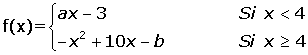
cumpla las hipótesis del teorema de Lagrange en el intervalo [2, 6].
- 1
- 2
- 3
- 4
- 5
- 6
- 7
- 8
- 9
- 10
- 11
Ejercicio 1 resuelto
¿Es aplicable el teorema de Rolle a la función f(x) = |x − 1| en el intervalo [0, 2]?
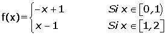
La función es continua en [0, 2].
No es aplicable el teorema de Rolle porque la solución no es derivable en el punto x = 1.
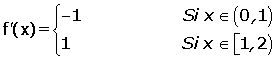
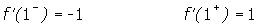
Ejercicio 2 resuelto
Estudiar si la función f(x) = x − x3 satisface las condiciones del teorema de Rolle en los intervalos [−1, 0] y [0, 1]. en caso afirmativo determinar los valores de c.
f(x) es una función continua en los intervalos [−1, 0] y [0, 1] y derivable en los intervalos abiertos (−1, 0) y (0, 1) por ser una función polinómica.
Además se cumple que:
f(−1) = f(0) = f(1) = 0
Por tanto es aplicable el teorema de Rolle.
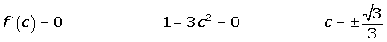
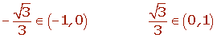
Ejercicio 3 resuelto
¿Satisface la función f(x) = 1 − x las condiciones del teorema de Rolle en el intervalo [−1, 1]?
La función es continua en el intervalo [−1, 1] y derivable en (−1, 1) por ser una función polinómica.
No cumple teorema de Rolle porque f(−1) ≠ f(1).
Ejercicio 4 resuelto
Probar que la ecuación 1 + 2x + 3x2 + 4x3 = 0 tiene una única solución.
Vamos a demostrarlo por reducción al absurdo.
Si la función tuviera dos raíces distintas x1 y x2, siendo x1< x2 , tendríamos que:
f(x1) = f(x2) = 0
Y como la función es continua y derivable por ser una función polinómica, podemos aplicar el teorema del Rolle, que diría que existe un c (x1, x2) tal que f' (c) = 0.
f' (x) = 2 + 6x + 12x2 f' (x) = 2 (1+ 3x + 6x2).
Pero f' (x) ≠ 0, no admite soluciones reales porque el discrimínante es negativo:
Δ = 9 − 24 < 0.
Como la derivada no se anula en ningún valor está en contradicción con el teorema de Rolle, por lo que la hipótesis de que existen dos raíces es falsa.
Ejercicio 5 resuelto
¿Cuántas raíces tiene la ecuación x3 + 6x2 + 15x − 25 = 0?
La función f(x) = x3 + 6x2 + 15x − 25 es continua y derivable en  ·
·
f(0) = −25
f(2) = 37
Por tanto la ecuación tiene al menos una solución en el intervalo (0, 2).
Teorema de Rolle.
f' (x) = 3x2 + 12x +15
Dado que la derivada no se anula, ya que su discriminante es negativo, la función es estrictamente creciente y posee una única raíz.
Ejercicio 6 resuelto
Demostrar que la ecuación 2x3 − 6x + 1 = 0 una única solución real en el intervalo (0, 1).
La función f(x) = 2x3 − 6x + 1 es continua y derivable en ·
f(0) = 1
f(1) = −3
Por tanto la ecuación tiene al menos una solución en el intervalo (0, 1).
Teorema de Rolle.
f' (x) = 6x2 - 6 6x2 - 6 = 0 6(x − 1) (x + 1) = 0
La derivada se anula en x = 1 y x = −1, por tanto no puede haber dos raíces en el intervalo (0, 1).
Ejercicio 7 resuelto
¿Se puede aplicar el teorema de Lagrange a f(x) = 4x2 − 5x + 1 en [0, 2]?
f(x) es continua en [0, 2] y derivable en (−1, 2) por tanto se puede aplicar el teorema del valor medio:
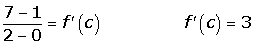
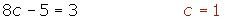
Ejercicio 8 resuelto
¿Se puede aplicar el teorema de Lagrange a f(x) = 1/ x2 en [0, 2]?
La función no es continua en [−1, 2] ya que no definida en x = 0.
Ejercicio 9 resuelto
En el segmento de la parábola comprendido entre los puntos A = (1, 1) y B = (3, 0) hallar un punto cuya tangente sea paralela la cuerda.
Los puntos A = (1, 1) y B = (3, 0) pertenecen a la parábola de ecuación y = x2 + bx + c.
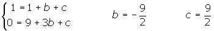
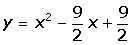
Por ser la función polinómica se puede aplicar el teorema del valor medio en el intervalo [1, 3].
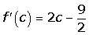
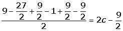
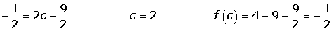
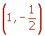
Ejercicio 10 resuelto
Calcular un punto del intervalo [1, 3] en el que la tangente a la curva y = x3 − x2 + 2 sea paralela a la recta determinada por los puntos A(1, 2) y B(3, 20). ¿Qué teorema garantiza la existencia de dicho punto?
Hallamos la ecuación de la recta que pasa por los dos puntos.
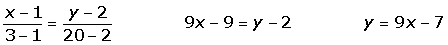
Por ser y = x3 − x2 + 2 continua en [1, 3] y derivable en (1, 3) se puede aplicar el teorema del valor medio:
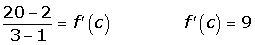
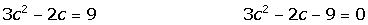
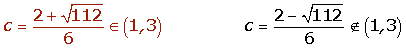
Ejercicio 11 resuelto
Determinar a y b para que la función
cumpla las hipótesis del teorema de Lagrange en el intervalo [2, 6].
En primer lugar se debe cumplir que la función sea continua en [2, 6].
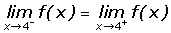
En segundo lugar se debe cumplir que la función sea derivable en (2, 6).
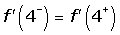
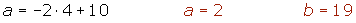
 Ejercicios
Ejercicios